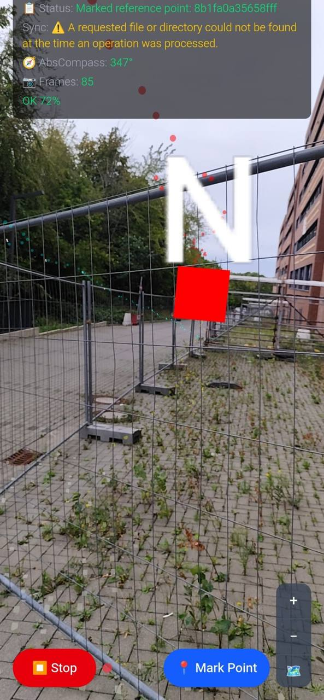
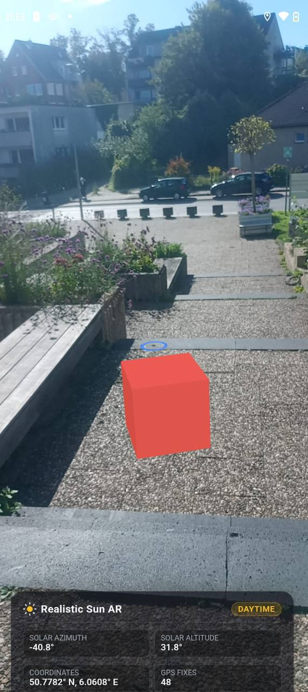
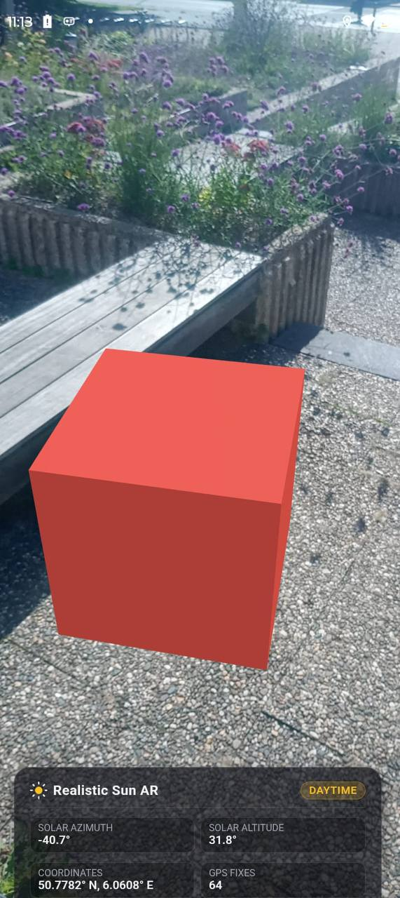
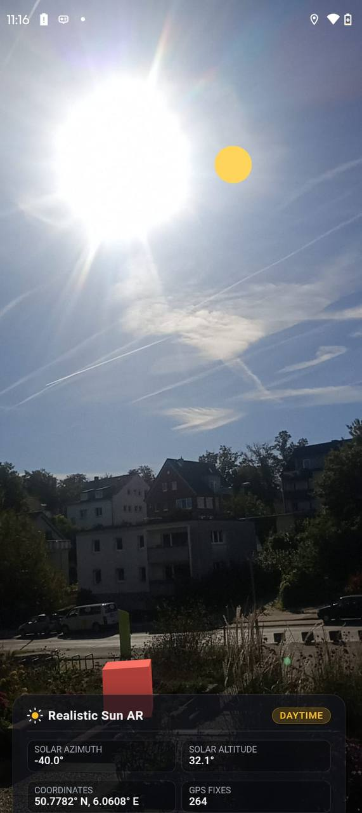

FIXED LIGHTINGMISMATCH
Correct position, wrong lighting
Making virtual sunlight
match the real world
Alissa Farber · Chin-Lucas Woo
Correct position, wrong lighting
Real location + time →
realistic lighting
Can virtual lighting match the real environment?
Outdoor recorder walks
Repeated reference points
Observe heading + lighting/shadows
Collect data for replay validation
No useful lighting/shadows visible.
Required ZIP not generated on Android.

Splitting the feature into independent components made parallel development easier and kept integration manageable.
Correct sun angles still need
the correct coordinate conversion.
“Azimuth measured clockwise from North”
Mismatch found
during review
Correct
conversion
+X North
+Y Up
+Z East
Takeaway: A plausible assumption can still be wrong.
One calculated sun state drives all visual effects.
INPUTSun directionOUTPUTVisible sun positionSECOND PURPOSEAR alignment check
LIVE DEMOVisible Sun Disc DemoINPUTSun altitudeOUTPUTLight intensity + color
LIVE DEMOSun Altitude Lighting DemoINPUTSun direction + lighting valuesOUTPUTDirectional light + matching virtual shadows
LIVE DEMOShadow Rig DemoSun position
Repeatable result
Direct source changes
Selected design referenceExplicit configuration
Pure snapshot + wrapper
The simpler approach became the starting point.
AI supported planning, review and implementation.
Largest underestimate
Sun Position: 2 h → 7 h
On estimate
Adapter + Shadow Rig



Any questions?
Contributions to the source repository: Pull request pending